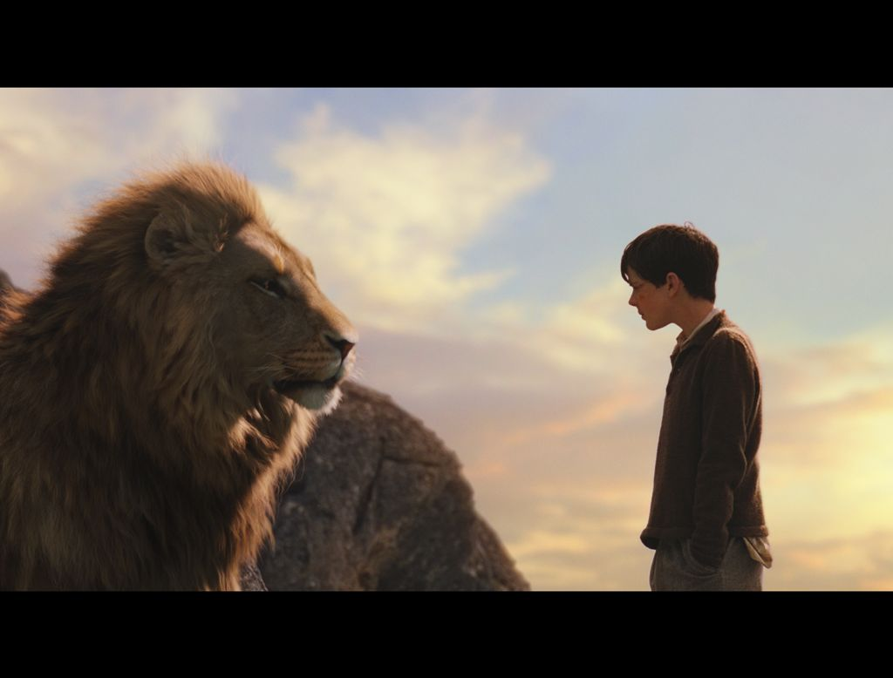

Todd Judd
Term Paper
C S Lewis

|
"We all want progress, but if you're on the wrong road, progress means doing an about-turn and walking back to the right road; in that case, the man who turns back soonest is the most progressive." - C S Lewis
|
Outline
- Life Story
- "My Irish life"
- World War !
- Jone Moore
- Conversion to Christianity
- Joy Gresham
- Illness and death
- Career
- The Scholar
- The novelist
- The Christian apologist
- Legacy
- Bibliography
- Secondary works
| Book |
Author |
Publisher |
| Pilgrim's Regress |
C S Lewis |
Chronicle Books |
| Space Trilogy |
C S Lewis |
Chronicle Books |
| The Chronicles of Narnia |
C S Lewis |
Chronicle Books |

Email me my grade: todd.judd@gmail.com